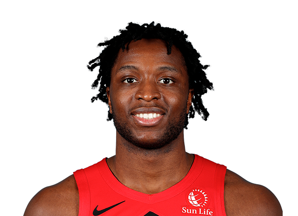

OG ANUNOBY

OG Anunoby was drafted in the 1st round in the 2017 NBA Draft with the 23rd pick by the Toronto Raptors. OG Anunoby was part of the team in the 2019 season, but missed most of the playoffs due to an emergency appendectomy. He was suited up for the the NBA Finals but did not play. In December 2020, OG agreed to sign to a $72 million contract extension for 4 years including a player option for the 2024-2025 season. OG Anunoby’s career highs are, 32 Points, 12 Rebounds, 6 Assists, 7 Steals and 4 Blocks.